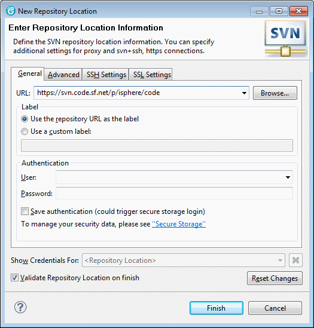
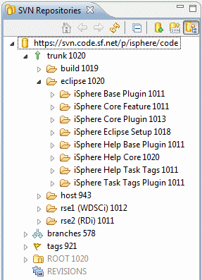
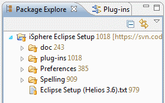
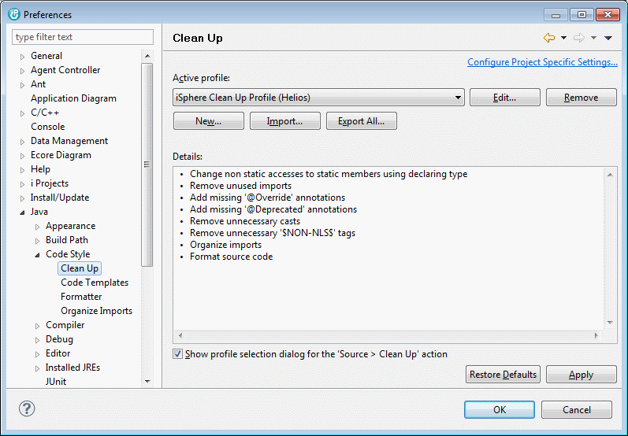
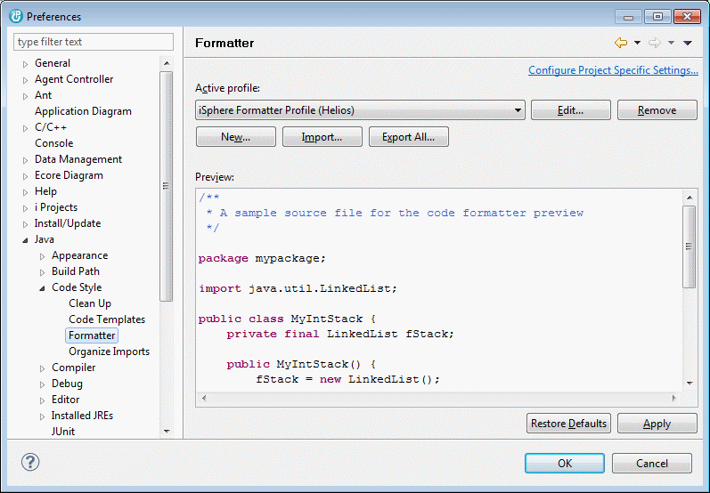
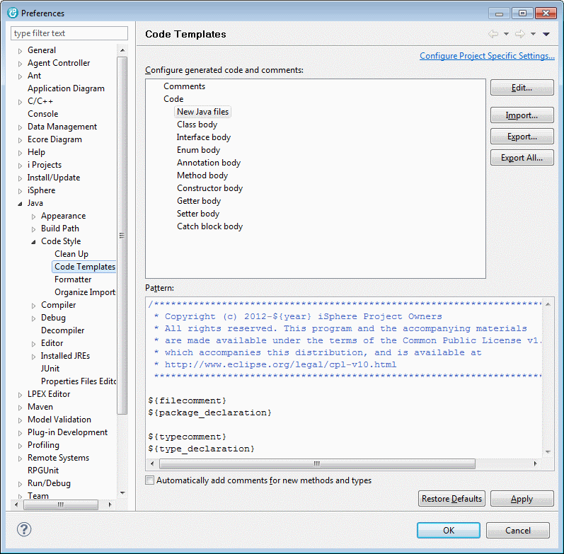
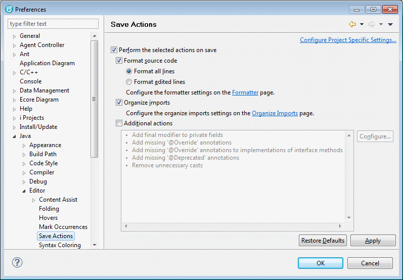
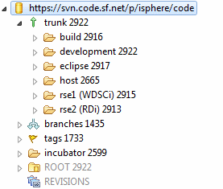
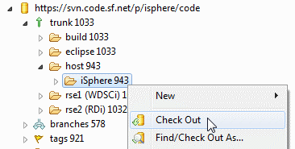
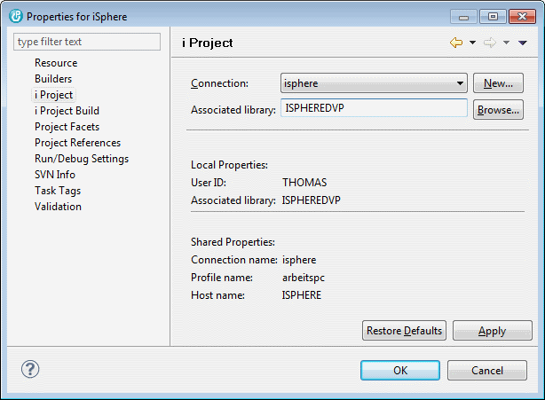

Open the "SVN Repository Exploring" perspective and click the "New Repository Location" icon on the "SVN Repositories" view.
Now enter the URL of iSphere repository at SourceForge https://svn.code.sf.net/p/isphere/code:

Click the "Finish" button. Now you should see the iSphere repository like this:

Let us go ahead and check out the "iSphere Eclipse Setup". Open the "SVN repository Exploring" view, right click the "iSphere Eclipse Setup" project and select "Checkout". The checkout process will start immediately and checkout the project to your workspace.

Next we want to install the "iSphere Ant Plugin", which provides some Ant tasks that we need to build the plug-in. Open "Help -> Install New Software..." and click the "Add" button. Enter a descriptive name, such as iSphere Ant Plugin and the location of the "iSphere Ant Contribution" zip file that you can find in directory "plug-ins" of the "iSphere Eclipse Setup" project.
Now we need to set the Java JRE that we need to compile the iSphere plug-in. Since we want to be compatible with WDSCi 7.0, we use that JRE to compile the classes.
Open "Windows -> Preferences -> Java -> Installed JREs". Click the "Add" button, select "Standard VM" and click "Next". Now select the WDSCi 7.0 JRE and give it the name "JRE 1.5.0 IBM J9". Please enter the same as shown. Do not change it. Usually the JRE is located in the jdk directory of the WDSCi SDP folder, e.g.:

The clean up profile is used to add missing source code or to remove unnessary code to/from a Java source file. It can be applied to a source file automatically, when the source file is saved. A shared clean up profile that is used by all developers is important, when the source code is stored in a repository, such as SVN. Then the clean up profile ensures, that there are, for example, no missing @override annotations or unnecessary type casts.
Import the clean up profile from file "Preferences_Java_CodeStyle_CleanUp (iSphere)_3.6.xml" of the "iSphere Eclipse Setup".

| WDSCi: Restore default values for all "Clean Up" tabs. Uncheck "Change all accesses through subtypes" on "Member Accesses" tab. |
The code formatter profile defines the rules that are applied when a Java source file is formatted. Java source files can be formatted automatically, when the source file is saved. It is important that all developers use the same formatting rules, when the source code is stored in a repository, such as SVN, to avoid changes just because of different formatting styles.
Import the code formatter profile from file "Preferences_Java_CodeStyle_Formatter (iSphere)_3.6.xml" of the "iSphere Eclipse Setup".

The Java code templates are used when creating a new Java file. The provided template modifies the existing "New Java files" template to add the iSphere copyright notice.
Import the code templates from file "Preferences_Java_CodeStyle_Code_Template (iSphere)_3.6.xml" of the "iSphere Eclipse Setup".

The save actions are pretty useful if the is a need to automatically perform actions when a source file is saved. We use it to automatically clean up and format our Java source files. Please set your save actions as described below:
| Enabled: | Perform the selected actions on save | |
| Enabled: | Format source code | |
| Enabled: | Format all lines | |
| Enabled: | Organize imports | |
| Disabled: | Additional actions |

Classpath variables are maintained from Window - Preferences - Java - Build Path - Classpath Variables.
| ANT_HOME | - | Path to the IBM shared plugins folder. Example: c:/Program Files/IBM/SDPShared/plugins/org.apache.ant_1.7.1.v20100518-1145/ | Required for the iSphere Ant Contribution project. |
| IBM_SHARED_PLUGINS | - | Path to the IBM shared plugins folder. Example: C:/Program Files/IBM/SDPShared/plugins | Required for the iSphere JUnit project. |
The iSphere SVN repository follows the standard SVN naming convention. The trunk folder contains the actual development code. The branches folder is used in rare cases, when it is required to do something that cannot be done with the current code base in the trunk folder, for example someone wants to try out something new, that at the end may or may not go into the project. Last but not least the tags folder is used to create tags of the iSphere releases. With a tag it is easy to check out a specific version of the project.

The folders below the trunk contains the following project types:
| eclipse | - | Projects commonly used by RDi and WDSCi | |
| host | - | IBM i library | |
| rse1 | - | WDSCi related projects | |
| rse2 | - | RDi related projects | |
The following projects are not shipped with iSphere: | |||
| build | - | Projects that are used to build the iSphere plug-in | |
| development | - | Projects that stores development utilities | |
Usually there is no need for checking out all projects. For example you may not want to check out the WDSCi related projects if your IDE is RDP or RDi. There is also no need for checking out the four Ant projects of the build folder. These projects are only needed when there is something to change in the iSphere Ant Contribution plug-in.
Checking out the iSphere host project is a bit different from checking out the other projects, because you need to specify the name of your iSphere library at the project properties after you checked it out.
You also need to change the i Project preferences to match the settings below, because we do not store source sequence numbers in the repository:

| Do not forget to change your i Project preferences. All IBM i native source code must be stored in the repository without sequence numbers. |
If you did not yet connect to SourceForge, refer to Installing the SVN Adapter to learn how to install the SVN adapter. Then right-click the iSphere project and check it out to your workspace:

Now switch to the i Projects perspective and right-click the iSphere project. Select Properties and i Project and specify the connection to your host and the name of your iSphere library:

We use ISPHEREDVP for developing iSphere and ISPHERE for the production library. Library ISPHERE is built with the iSphere BUILD command from the command line as described in Library Build.
Now create the library that you associated to your i Project, if it does not yet exist: